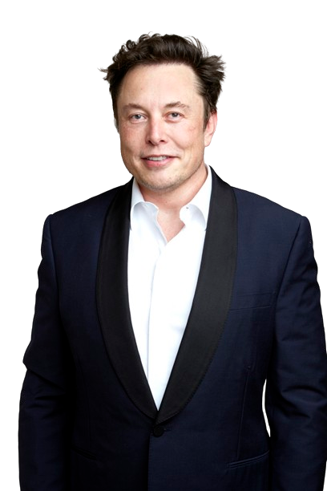

Elon Musk
CEO, Tesla

Elon Musk
Inducted In: 2014
Country: South Africa, United States
Elon Musk (born 1971): Founded SpaceX in 2002. The company built, then flew the Falcon 1 and 2 rockets, as well as the Dragon Spacecraft. SpaceX is the first privately-funded firm to launch liquid-fuelled rockets that deployed satellites in space. In 2012, the Dragon became the first privately-owned spacecraft to dock with the ISS. Musk, a native of South Africa, hopes to foster a ‘space-faring’ civilization, with the long-term goal of going to Mars.
Elon Musk was born on June 28, 1971, in Pretoria, South Africa. He taught himself computer programming and at age twelve sold the computer code for a video game. He moved to Canada in 1988 and is a graduate of the University of Pennsylvania, with both Bachelor of Arts and Bachelor of Science Degrees. He became an American citizen in 2002.
The same year, Musk, who had made hundreds of millions of dollars in other business ventures, founded his third company, Space Exploration Technologies (SpaceX). He announced that its goal was to develop and manufacture space launch vehicles. SpaceX was awarded a $1.6 billion NASA contract in 2008 for twelve flights of the Falcon 9 rocket and Dragon spacecraft to the International Space Station (ISS), beginning in 2011 as a replacement for the Space Shuttle.
In September 2009, SpaceX’s Falcon 1 rocket became the first privately funded liquid-fuelled vehicle to put a satellite into Earth orbit. On 25 May 2012, the SpaceX Dragon vehicle docked with the ISS. This made SpaceX the first commercial company to launch and dock a vehicle to the International Space Station. Musk is currently working on delivering astronauts to the International Space Station. He is also planning on the human exploration and settlement of the planet Mars, with a permanent base on the Red Planet no later than the year 2031.
Elon Musk is a Director of the Planetary Society, a Trustee of The X-Prize Foundation and a member of the Stanford University Engineering Advisory Board. He has also been a member of the United States National Academy of Sciences Aeronautics and Space Engineering Board. He sits on the boards of The Space Foundation, The National Academies Aeronautics and Space Engineering Board, The Planetary Society, and Stanford Engineering Advisory Board and is a member of the board of trustees of the California Institute of Technology.
Jeff Bezos
Chairman And Founder, Amazon
$206.3B
.png)
Jeffrey Preston Bezos;[2] né Jorgensen; born January 12, 1964) is an American businessman, media proprietor and investor. He is the founder, executive chairman, and former president and CEO of Amazon, the world's largest e-commerce and cloud computing company. He is the second wealthiest person in the world, with a net worth of US$ 201 billion as of June 14, 2024, according to Forbes.[3][4] He was the wealthiest person from 2017 to 2021, according to both the Bloomberg Billionaires Index and Forbes.[5]
Bezos was born in Albuquerque and raised in Houston and Miami. He graduated from Princeton University in 1986 with degrees in electrical engineering and computer science. He worked on Wall Street in a variety of related fields from 1986 to early 1994. Bezos founded Amazon in mid-1994 on a road trip from New York City to Seattle. The company began as an online bookstore and has since expanded to a variety of other e-commerce products and services, including video and audio streaming, cloud computing, and artificial intelligence. It is the world's largest online sales company, the largest Internet company by revenue, and the largest provider of virtual assistants and cloud infrastructure services through its Amazon Web Services branch.
Bezos founded the aerospace manufacturer and sub-orbital spaceflight services company Blue Origin in 2000. Blue Origin's New Shepard vehicle reached space in 2015 and afterwards successfully landed back on Earth; he flew into space on Blue Origin NS-16 in 2021. He also purchased the major American newspaper The Washington Post in 2013 for $250 million and manages many other investments through his venture capital firm, Bezos Expeditions. In September 2021, Bezos co-founded Altos Labs with Mail.ru founder Yuri Milner.[6]
The first centibillionaire on the Forbes Real Time Billionaires Index and the second ever to have eclipsed the feat since Bill Gates in 1999, Bezos was named the "richest man in modern history" after his net worth increased to $150 billion in July 2018.[7] In August 2020, according to Forbes, he had a net worth exceeding $200 billion. On July 5, 2021, Bezos stepped down as the CEO and president of Amazon and took over the role of executive chairman. Amazon Web Services CEO Andy Jassy succeeded Bezos as the CEO and president of Amazon.